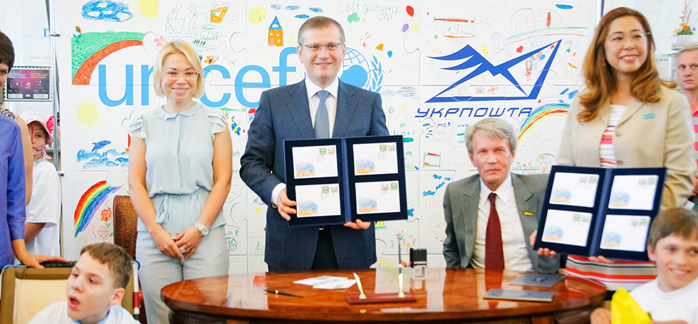
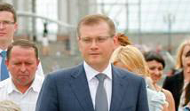
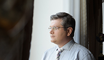
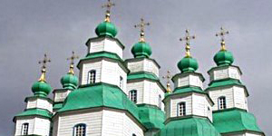
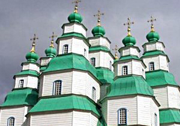

Олександр Вілкул
персональний сайт
Новини
Анонси
архів новин
Підписка на новини
о. Вілкул
Біографія
У ЗМІ
Фотогалерея
Відео та аудіо
Проекти розвитку
Операційна діяльність
Громадська діяльність
Партія регіонів

12 травня
Олександр Вілкул разом з головою Дитячого фонду ООН (ЮНІСЕФ) в Україні Юкіе Мокуо, розпочали всеукраїнську акцію

О. Вілкул вручив у Вінниці свідоцтва на право доступне житло 24 родинам

Олександр Вілкул провів зустріч з Прем'єр-міністром Федеральної землі Бранденбург Матіасом Платцеком
Цифра дня
6 000
така кількість українських сімей отримали квартири за підтримки держави на протязі 2010 - 2012 рр.
АНОНСИ
23 травня Олександр Вілкул в Берліні проведе засідання українсько-німецької Групи високого рівня
Новый анонс
Самый новый анонс
Новини

Олександр Вілкул провів зустріч з Прем'єр-міністром Федеральної землі Бранденбург Матіасом Платцеком
Сьогодні, 14:01
Олександр Вілкул провів зустріч з Прем'єр-міністром Федеральної землі Бранденбург Матіасом Платцеком
Сьогодні, 14:01
Олександр Вілкул провів зустріч з Прем'єр-міністром Федеральної землі Бранденбург Матіасом Платцеком
Сьогодні, 14:01
Олександр Вілкул провів зустріч з Прем'єр-міністром Федеральної землі Бранденбург Матіасом Платцеком
Сьогодні, 14:01
Олександр Вілкул провів зустріч з Прем'єр-міністром Федеральної землі Бранденбург Матіасом Платцеком
Сьогодні, 14:01
Олександр Вілкул провів зустріч з Прем'єр-міністром Федеральної землі Бранденбург Матіасом Платцеком
Сьогодні, 14:01
Олександр Вілкул провів зустріч з Прем'єр-міністром Федеральної землі Бранденбург Матіасом Платцеком
Сьогодні, 14:01
Олександр Вілкул провів зустріч з Прем'єр-міністром Федеральної землі Бранденбург Матіасом Платцеком
Сьогодні, 14:01
Олександр Вілкул провів зустріч з Прем'єр-міністром Федеральної землі Бранденбург Матіасом Платцеком
Сьогодні, 14:01
Всі новини
Проекти розвитку

Свято-Троїцький собор
Свято-Троїцький собор
Свято-Троїцький собор
Свято-Троїцький собор
Свято-Троїцький собор
Свято-Троїцький собор
Всі проекти
Олександр Юрійович Вілкул
— український державний менеджер, Віце-прем'єр-міністр України, Голова Державної комісії з питань техногенно-екологічної безпеки та надзвичайних ситуацій.
Главная
Новини
Анонси
архів новин
о. Вілкул
Біографія
У ЗМІ
Фотогалерея
Відео та аудіо
Проекти розвитку
Операційна діяльність
Громадська діяльність
Партія регіонів
Захист правдивої історії нашого народу
Дніпропетровська обласна організація Партії регіонів
Вдячність поколінь
Пишаємося Великою Перемогою
70-річчя Битви за Дніпро
Шкільний музей
Пам'ятники та меморіали
Музей фортифікації Великої Вітчизняної війни
Народний кіноклуб
Православ'я
Військово-спортивна гра «Зірниця»
Співпраця з діаспорами і національними конфесіями
Дитячі ігрові містечка. Спортивні майданчики
Розвиток інтелектуального руху
Шкільний проект
Парк ракет
Будуємо нову Дніпропетровщину
Спортивний марафон
Молоді регіони
Супровід та допомога кризовим сім'ям
Марафон дитячої творчості